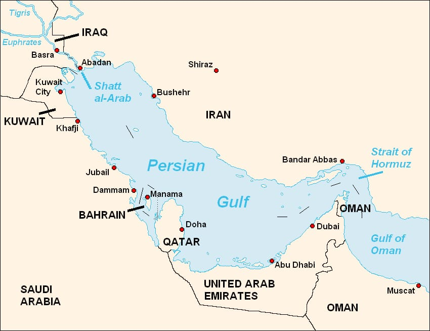
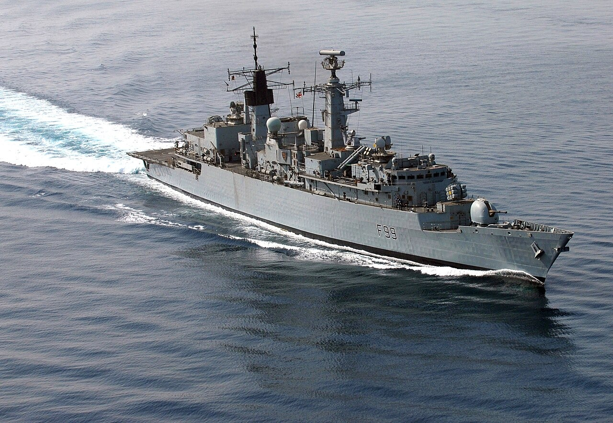
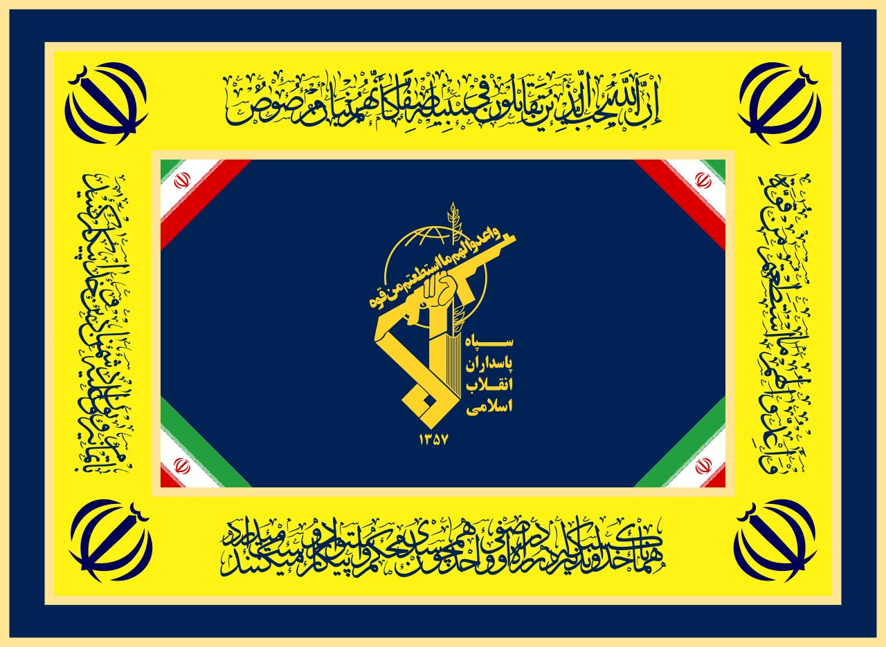
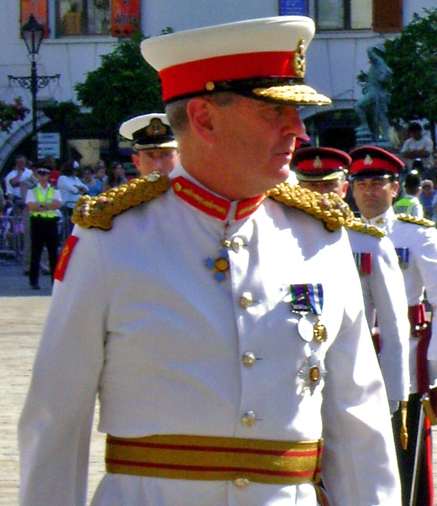
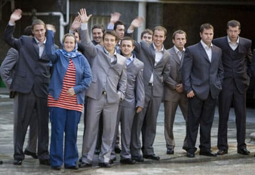
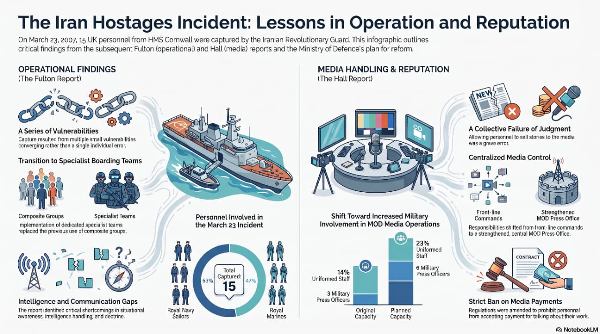
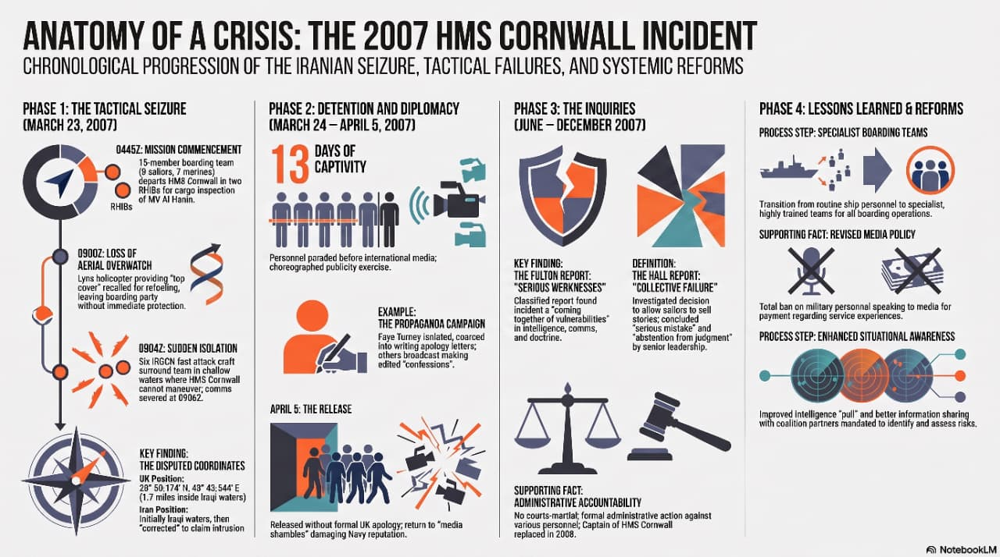

Leadership | Ethics | Organisational Behaviour
When Routine Meets Ambush
The 2007 Iranian Hostage Crisis
History tells us what happened. Management tells us why it happened.
DECLASSIFIED | IRAN-2007
Mission Briefing
Leadership Case Investigation
Course: Organisational Behaviour
Faculty: Dr. XXXXX
Syndicate XX
Cold Open
23 March 2007
09:10 AM
15 British personnel.
Surrounded.
Outnumbered.
No orders.
30 seconds to decide.
Mission Board
Agenda
SituationActorsIncident
LeadershipEthicsOB FailuresLessons

Shatt al-Arab
Setting The Stage
A Border Written On Water
- Iran-Iraq maritime border
- High geopolitical tension
- Coalition maritime security patrol
- Boundary interpretation contested
A conflict over maps became a crisis over leadership.
Timeline
How The Crisis Unfolded
Actors
Influence Network
Incident
Royal Navy
IRGC Navy
MoD
Media
Parliament
Coalition
Story Begins
Routine Turns Critical
Boarding team launches from HMS Cornwall.
Dhow inspection appears ordinary.
Surveillance gap opens.
Iranian patrol boats close in.
The Critical Moment
Fight Or Surrender?
30 Seconds
FightEscalation | casualties | possible war
SurrenderHostage crisis | diplomatic route
Why It Happened
The Iceberg Below The Capture
Capture
Routine complacencyPoor intelligenceWeak coordination
Predictable patrolsLeadership ambiguityMemory failure
Leadership Styles
Three Styles Under Pressure

Royal NavyTransactionalSOP-led, disciplined, but rigid in ambiguous space.

Iranian ForcesAuthoritarianCentralized, fast, and tactically assertive.

Fulton ReviewTransformationalReform-oriented focus on systems, learning, and command.
Actor Analysis
Leadership Styles In The Case
| S. No. | Actor | Leadership Style | Remarks |
|---|---|---|---|
| 1 | HMS Cornwall | Transactional | Focused on procedures and mission execution, but failed to adapt to changing risks. |
| 2 | Royal Navy senior leadership | Bureaucratic | Relied on doctrine and chain of command, slowing adaptation. |
| 3 | Secretary of State Des Browne | Accountable and democratic | Accepted responsibility, commissioned investigations, and allowed parliamentary scrutiny. |
| 4 | Sir Rob Fulton | Transformational | Identified systemic weaknesses and recommended reform rather than blame. |
| 5 | Tony Hall | Ethical | Focused on transparency, governance, and media policy improvement. |
| 6 | Defence Committee | Participative | Challenged the MoD, demanded evidence, and monitored implementation. |
| 7 | Iranian Revolutionary Guard | Authoritarian | Used centralized command and decisive execution in the capture operation. |
Leadership Matrix
Speed Versus Flexibility
Decision Speed
Flexibility
Iran
Royal Navy
MoD
Ethical Dilemmas
Four Questions Leaders Faced
Integrity Test
Accountability Dashboard
Accountability High
Transparency Mixed
Professional Ethics Failed
Leadership Ownership Delayed
Many people could have said no. Nobody did.
Organisational Behaviour
Failures That Interlocked
CommunicationLeadershipGroupthink
Learning FailureEthicsCrisis Management
Root Cause Analysis
Entities Pulled Into One Incident
Incident
PeopleProcessLeadership
CommunicationEnvironmentCulture
Swiss Cheese Model
Several Small Holes Aligned
TrainingCommunicationLeadershipEthics
Hostage Crisis
Aftermath
What Changed Afterwards
BeforeInvestigationsReleaseRecommendationsPreparedness

Lessons For Managers
Beyond The Military Case
Routine creates blind spots.
Ethics matters most in crisis.
Communication saves organisations.
Leadership is tested under uncertainty.
Institutional memory prevents repeated failures.

Visual Annexure
Incident Collage I

Visual Annexure
Incident Collage II
Annexure
Case Video Reference
Annexure 2
Crew Return
The hostage crisis was not won or lost in 30 minutes.
It was built over years of unnoticed organisational failures.
Questions?
When routine meets ambiguity, leadership decides the outcome.